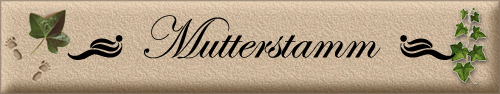

|
|
|
|

Die
Mutterrolle
lernt man nicht, man muss sie einfach leben.
Und
am Ende,
wenn man sich darauf vorbereitet,
Beim Mutterstamm handelt es sich um die matrilineare Abstammung, d.h. um die direkte, ununterbrochene Mutter-Tochter-Linie eines Menschen. Zu Unrecht finden menschliche Mutterstämme noch immer relativ wenig Beachtung (ganz im Gegensatz etwa zu den Mutterstämmen von Zuchtpferden ;-), obwohl ihre Untersuchung großes Interesse verdient. In jüngerer Zeit hat die Erforschung der menschlichen Mitochondrien-DNA (mtDNA), die ebenso wie das männliche und eines der beiden weiblichen x-Chromosome nur matrilinear vererbt wird, besondere Aufmerksamkeit gefunden. So lassen sich durch den Vergleich von mtDNA-Mutationen interessante Rückschlüsse auf die Entwicklungs- und Bevölkerungsgeschichte des Menschen ziehen. Im übrigen ist keine Abstammungslinie so historisch sicher wie der Mutterstamm ("maternitas semper certa", wie der Lateiner weiß: die Mutterschaft ist immer sicher), auf der anderen Seite ist aber auch keine quellenmäßig so schwierig zu rekonstruieren. Schließlich sind, je weiter wir in der Geschichte zurückgehen, Informationen eher über Männer als über ihre Frauen überliefert. Beim Mutterstamm kommt dieses Problem natürlich in ganz besonderer Weise zum Tragen, zumal in der Regel mit jeder Generation der Familienname wechselt. (außer bei unehelichen Kindern) und die betreffenden Frauen in den Quellen wie Kirchenbücher usw. nur als "Anhängsel" ihres Mannes geführt werden. Nur bei frühen Taufeinträgen erscheint manchmal der volle Name, bei Hochzeiten werden selten die Brautmütter genannt, bei Tod war es wiederum oft nur XY sein Weib. Andere Kriterien wie Heirats- und Gebäralter können verfolgt werden, aber auch die Weiterreichung von Teilen der Vornamen an die Töchter, Lebensalter und auftauchen von unehelichen Kindern, was natürlich nur in früheren Zeiten überhaupt eine Rolle (für Moralapostel und solche die sich dafür hielten) spielte.
Für viele
Mutterstämme zumindest in früheren Zeiten gilt: Die Linie des Stammbaumes nimmt in der Ahnenordnung nach Kekule von Stradonitz die äußerste linke Linie ein, wohingegen der Mutterstamm alle Ahnen der äußersten rechten Linie enthält.
|